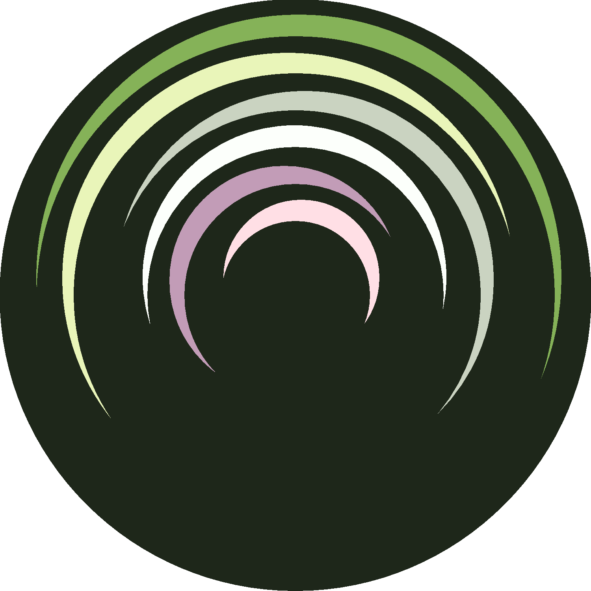

| Feature | Color | Base Background | Selection/Highlight | R markdown chunk |
|---|---|---|---|---|
| Code | White | 13.50 | 11.05 | 15.32 |
| Comment | Purple | 5.66 | 4.63 | 6.42 |
| Keyword Contants | Pink | 10.97 | 8.99 | 12.45 |
| Keyword Functions | Green | 5.51 | 4.51 | 6.25 |
| Number | Dull | 8.81 | 7.22 | 10.00 |
| String | Yellow | 11.81 | 9.67 | 13.40 |
This post goes through the work for the Calathea color scheme. I assembled this color scheme because having the code syntax highlighting on my website mismatching the rest of the site design annoyed me. That resulted in a RStudio theme. You can check out the project here.
The base of the color scheme comes from the Calathea genus, which is a popular houseplant. I picked the colors by pulling them from searching Google or pictures I had. These were images downloaded from the web, and then the colors were picked using the Paint app on Windows 10. Any color picker in a browser or app will probably work. I saved all of the base colors as hex codes in a csv. I played around with the colors by using color-hex.com. Inputting a hex color here will give you several variations on shades, tints, and monochromatic colors. These options are useful when I wanted something a little brighter or darker.
I tested out the colors by making an icon image. The icon was mostly for fun but did produce a suitable code file to test out the colors in RStudio. There are three different versions, one for each background. The code to create them can be found here.


The foreground/background contrasts were determined to see if they passed WCAG AA standards for normal text. All the foreground colors have at least a 4.5:1 contrast with all the background colors.
I originally shot for AAA, but I couldn’t get that working while having the foreground colors stand apart from each other. The code to determine the contrast values is here.
I also attempted to check color-blindness compatibilities using this simulator from color-blindness.com. These colors look ok but might need improvement for monochrome.

At the end of this process, I ended up with this set of colors.
| Feature | Color Name | HEXCOL |
|---|---|---|
| R Markdown Chunk | Darker Dark Green | #1E271A |
| Background | Dark Green | #263121 |
| Selection | Lighter Dark Green | #353E31 |
| Highlight | Lighter Dark Green | #353E31 |
| Keyword Functions | Green | #85B258 |
| Comment | Purple | #C29CB7 |
| Number | Dull | #CAD3C1 |
| String | Yellow | #E9F5B9 |
| Code | White | #FCFFFB |
| Keyword Operator | White | #FCFFFB |
| Keyword Contants | Pink | #FFDFE5 |
| Python Meta | Pink | #FFDFE5 |
I set up the RStudio theme using the Making and Sharing Themes instructions. The only change from the tmTheme to the rstheme is a manual edit to the R markdown chunk. The default was too bright, so the edit makes it a lot darker. There are still some areas of the IDE that can’t be edited without more advance CSS. I will deal with that another time.
NOTE: This is for the old website design
The color scheme was converted to CSS files for Hexo and highlight.js here using this code. To get these colors working syntax highlighting for blogdown, the custom CSS parameter needed to be set after moving the calathea_hexo.css to the CSS folder in static. The config file with these options:[[params.customCSS]] href = "css/calathea_hexo.css" will set up everything.
Finally, to get the color scheme working with the correct R code syntax on the website, the files for R code syntax for highlight.js were downloaded from here and moved to the js folder in the static folder. To have this blogdown theme use this JavaScript file, the config option syntaxHighlighter = "highlight.js" needed to be set. Then to get the r.min.js file working, the custom JavaScript parameter needed to be set, similar to the custom CSS option. The [[params.customJS]] src = "js/r.min.js" was put in the config file. SQL and Python are pre-built into the theme. However, a python.min.js file was adapted from highlight.js 9.8.0 file with None True False moved to literal in order to get None to color successfully. The 9.8.0 version is needed to work with the current theme. This version number was found in the theme documentation.
################################
## R code syntax highlighting ##
################################
library(ggplot2)
centre <- function(x, type, ...) {
switch(type,
mean = mean(x),
median = median(x),
trimmed = mean(x, trim = .1))
}
myVar1
myVar.2
data$x
foo "bar" baz
# test "test"
"test # test"
(123) (1) (10) (0.1) (.2) (1e-7)
(1.2e+7) (2e) (3e+10) (0x0) (0xa)
(0xabcdef1234567890) (123L) (1L)
(0x10L) (10000000L) (1e6L) (1.1L)
(1e-3L) (4123.381E-10i)
(3.) (3.E10) # BUG: .E10 should be part of number
# Numbers in some different contexts
1L
0x40
.234
3.
1L + 30
plot(cars, xlim=20)
plot(cars, xlim=0x20)
foo<-30
my.data.3 <- read() # not a number
c(1,2,3)
1%%2
"this is a quote that spans
multiple lines
\"
is this still a quote? it should be.
# even still!
" # now we're done.
'same for
single quotes #'
# keywords
NULL, NA, TRUE, FALSE, Inf, NaN, NA_integer_,
NA_real_, NA_character_, NA_complex_, function,
while, repeat, for, if, in, else, next, break,
..., ..1, ..2
# not keywords
the quick brown fox jumped over the lazy dogs
null na true false inf nan na_integer_ na_real_
na_character_ na_complex_ Function While Repeat
For If In Else Next Break .. .... "NULL" `NULL` 'NULL'
# operators
+, -, *, /, %%, ^, >, >=, <, <=, ==, !=, !, &, |, ~,
->, <-, <<-, $, :, ::
# infix operator
foo %union% bar
%"test"%
`"test"`################################
## Python syntax highlighting ##
################################
@requires_authorization
def somefunc(param1='', param2=0):
r'''A docstring'''
if param1 > param2: # interesting
print 'Gre\'ater'
return (param2 - param1 + 1 + 0b10l) or None
class SomeClass:
pass
>>> message = '''interpreter
... prompt'''/***************************/
/* SQL syntax highlighting */
/***************************/
CREATE TABLE "topic" (
"id" serial NOT NULL PRIMARY KEY,
"forum_id" integer NOT NULL,
"subject" varchar(255) NOT NULL
);
ALTER TABLE "topic"
ADD CONSTRAINT forum_id FOREIGN KEY ("forum_id")
REFERENCES "forum" ("id");
-- Initials
insert into "topic" ("forum_id", "subject")
values (2, 'D''artagnian');